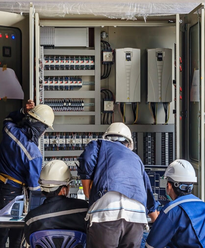

Who we are?
Our Team
- Mr. K Karunakara, Sr. Consultant, Former Joint Director, CPRI, has more than three and half decades rich experience in High Voltage field, Field Testing Services and Third-party Inspection. He has rich knowledge in finding RCA of the equipment and system up to 765kV. Also, has experience in design & development of custom-built equipment, repair and maintenance of equipment like 3 million volts, 150kJ Impulse voltage and 100kV, 150kJ, Current Generator from M/s Heafley, Switzerland and 1800kV, 1Amps, Power Frequency Transformer from High Volt, Germany.
- Mr. P V Vasudevan Nambudiri, Sr. Consultant, Former Additional Director, CPRI, has more than four-decade rich experience in design, development of high voltage test and measuring equipment. Also has experience in design, development & servicing of custom-built equipment.
- Mr. Chandrashekar Keri, Sr. Consultant, Former Scientific officer, CPRI, has more than three-decade rich experience in Diagnostic/Condition Monitoring of HV/EHV equipment. He also has experience in RLA study, Life Extension and RM&U studies.
- Mr. B Gunasekaran, Sr. Consultant, former Additional Director, CPRI, has more than four-decade experience in calculation of electric and magnetic field under the transmission line and EFM calculation using 3D Colum software
- Dr. S Vynatheya, Sr. Consultant, Former Joint Director, CPRI, has three and half decades rich knowledge in material characterisation of engineering materials using sophisticated instruments. His field of intrest are failure analysis of engineering component, product development, RLA study on thermal/hydro power station components.
